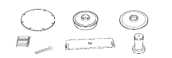

AUTOMATIC TRANSMISSION UNIT > DISASSEMBLY > Preparation

| 09320-89010 | Transfer Clutch Spring Compressor | |
 | 09350-30020 | TOYOTA Automatic Transmission Tool Set |
| (09350-07020) | Oil Pump Puller | |
 | (09350-07040) | No. 2 Piston Spring Compressor |
| (09350-07050) | No. 3 Piston Spring Compressor | |
 | (09350-07060) | No. 1 Snap Ring Expander |
 | (09350-07070) | No. 2 Snap Ring Expander |
| (09350-07080) | Brake Reaction Sleeve Puller | |
| (09350-07090) | Brake No.1 Piston Puller | |
 | 09351-40010 | Tool Set, TOYOTA Automatic Transmission |
| 09387-00070 | First & Reverse Brake Wrench | |
 | 09950-60010 | Replacer Set |
 | (09951-00650) | Replacer 65 |
 | 09950-70010 | Handle Set |
 | (09951-07150) | Handle 150 |
| Angle gauge | - |
| Calipers | - |
| Cylinder gauge | - |
| Dial indicator | - |
| Feeler gauge | - |
| Micrometer | - |
| OBD II scan tool | - |
| Straight edge | - |
| Torque wrench | - |
| V block | - |
| Vernier calipers | - |
| Automatic transmission fluid: Dry fill | 10.4 liters (11.0 US qts, 9.2 Imp. qts) | Toyota Genuine ATF WS |
| Automatic transmission fluid: Drain and refill | 3.0 liters (3.2 US qts, 2.6 Imp. qts) |
 | 09031-00030 | Pin Punch | - |
 | 09082-00040 | TOYOTA Electrical Tester | - |
| Toyota Genuine Seal Packing 1281, Three Bond 1281 or equivalent | - |
| Toyota Genuine Adhesive 1344, Three Bond 1344 or equivalent | - |